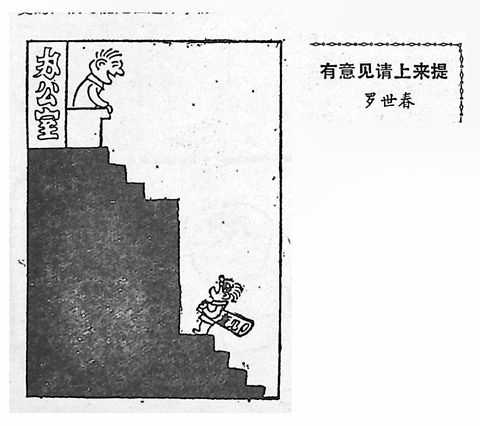

Complaints and petitions 5
-
 打入冷宫 · Banished to the Cold Palace
打入冷宫 · Banished to the Cold Palace
Wang Yan 王燕. Renshi (Personnel), 1986 no. 4 (whole no. 7), p. 47. -

有意见请上来提 · If You Have Complaints, Come Up and Raise Them
Luo Shichun 罗世春. Renshi (Personnel), 1986 no. 11 (whole no. 14), p. 40. -
 有什么可顾忌的！ · What Is There to Be Afraid Of!
有什么可顾忌的！ · What Is There to Be Afraid Of!
Gao Feng 高枫. Renshi (Personnel), 1990 no. 6 (whole no. 57), inside back cover. -
 百里挑一 · One in a Hundred
百里挑一 · One in a Hundred
Wang Daquan 王大全. Renshi (Personnel), 1990 no. 6 (whole no. 57), inside back cover. -
 避嫌 · Keeping Clear
避嫌 · Keeping Clear
Liu Ran 刘然. Renshi (Personnel), 1990 no. 10 (whole no. 61), p. 40.